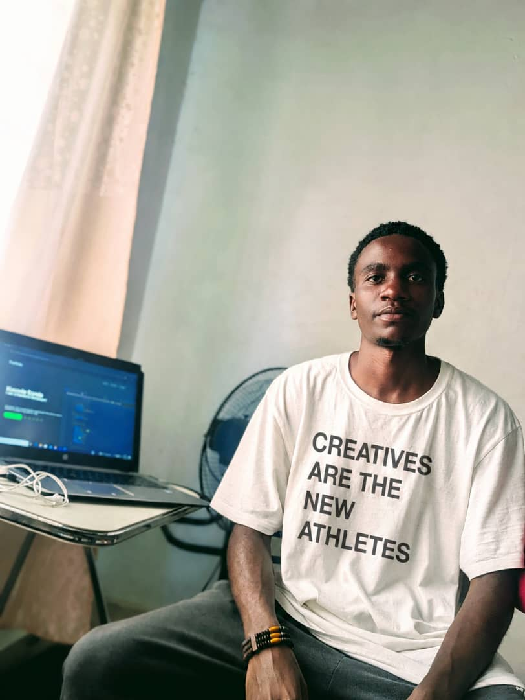

About Me
Hello World, my name is Kuunda Banda, and I am a Computer Science student at Mulungushi University in Zambia. I am a highly ambitious individual with a strong desire to contribute to the development of the world through technology. I was first introduced to computers by my father when I was very young, so I have interacted with computers for as long as I can remember.At first, most of what I did on computers was the obvious playing video games, watching movies and exploring different forms of entertainment. However, as my knowledge of technology grew, I began to realise that computers were not simply machines for entertainment. I started to understand the power that technology holds and how significant it has become in shaping the way people communicate, learn, work and solve problems. Today, my interest in technology goes beyond simply using it; I want to understand how it works and learn how to use it to create solutions that are useful to people and businesses. As I study Computer Science and Web Technologies, I am developing the ability to think critically, learn new technologies and approach problems with a solution-oriented mindset. I want to become someone who can be relied upon to show up, understand a problem, take responsibility and contribute something of real value. My goal is not only to gain technical knowledge, but to turn that knowledge into practical solutions that can make a meaningful difference.
My Hobbies
- Web Programming
- Playing Video Games
- Playing an Electric Guitar
Steps To Improve My Web Skills
- Practice HTML and CSS daily using small personal projects like this one.
- Learn JavaScript fundamentals through W3Schools and build interactive elements.
- Study a real-world project on GitHub and try to recreate parts of it myself.
My Learning Plan
| Day | Topic | Practice Task |
|---|---|---|
| Monday | HTML Structure | Rebuild this page's layout from scratch |
| Wednesday | CSS Styling | Practice flexbox with a photo gallery |
| Friday | JavaScript Basics | Write a simple form validation script |
My Photos

My Media
Video Introduction
In this short video I introduce myself, mention that I study Computer Science, and share that I hope to become more confident with JavaScript.
Audio Clip
In this audio clip, I talk about my Interest in relation to Technolgy
Contact
Note: This form is a browser demonstration only and does not send data anywhere.